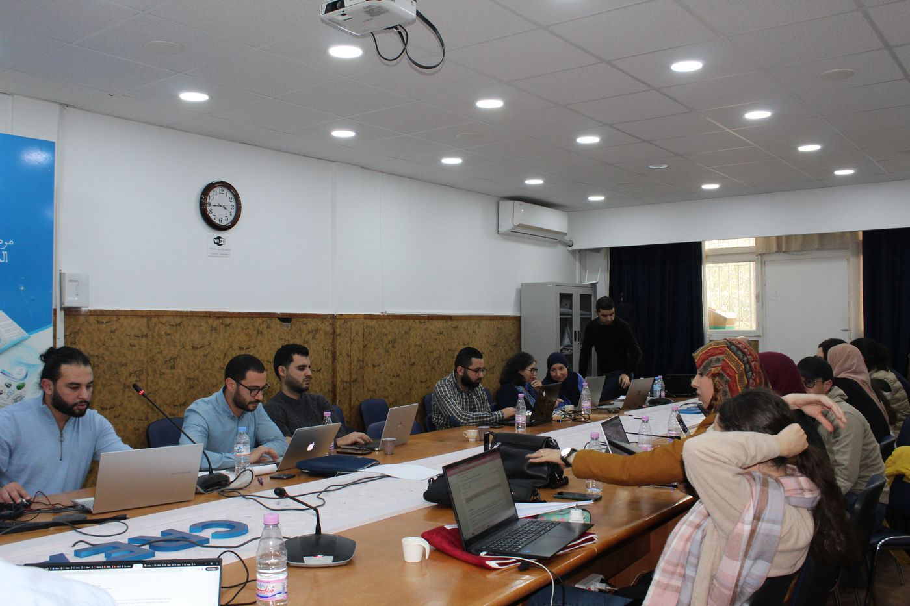

Teaching & Training
Open, reproducible climate science for agriculture
I co-lead Open Climate Science for Agriculture, a NASA-funded curriculum that teaches researchers to use NASA satellite data and climate models for agricultural applications in a warming world. The materials are open, Python-based and available in English, French and Arabic.
Co-Investigator NASA TOPS · 80NSSC23K0864 2023–2025 CC BY-SA 4.0
Curriculum
Five modules of about four hours each. Every module is a set of Jupyter notebooks you can run end to end.
M1
Open Climate Data
- Sources of climate data
- NASA Earthdata Search and re-analysis data
- Reading MERRA-2 gridded climate data
- Accessing MERRA-2 in the cloud
- Introduction to Earth observation data
- Introduction to climate models
- Using re-analysis data to study drought
- Using NASA Earth observations
M2
Computational Climate Science
- Managing software dependencies
- Working with gridded climate data
- Climate and drought indices
- Processing long climate records concurrently
- Creating a reproducible climate analysis
M3
Open Science for Water Resources
- Creating a research software environment
- Analyzing a global precipitation data cube
- Tracking changes to research code
- Creating a basin-scale water budget
- Documenting the water-budget workflow
M4
Open Science for Soil Health
A guided project: high-resolution (30 m) soil organic carbon mapping in Algeria’s Tell Atlas, built as a reproducible notebook workflow. Led by Ghiles Kaci.
M5
Open Science for Crop Conditions and Crop Production
- Creating a project plan
- Creating a reproducible research environment (Pixi)
- Setting up data-processing workflows (Snakemake)
- Writing a transparent algorithm
+
Foundations
Introductory lessons on Python fundamentals, sequences and NumPy, and core computational data-science skills.
Workshops
Oct 2025
SEEDS Seminar Series. Online, hosted by the University of Maryland
Thirteen talks on remote sensing and AI for agriculture. Organized as project lead. Programme and recordings →
Apr 2025
Working with Gridded Climate Data in Python. Helena, Montana, USA
Introduction to NumPy, followed by Module 1: Open Climate Data. Workshop page →
Jun 2024
Engaging with Open Science for Agriculture Using NASA Climate Data. CREAD, Algiers, Algeria (hybrid)
Python fundamentals, Module 1 and Module 2. Taught in English with French and Arabic facilitation. Workshop page →
2024
Crop Mapping and Random Sampling and Field Data Collection Principles and Field Surveys. CRAT, Constantine, Algeria
Hands-on training in sampling design and field data collection for cropland mapping.


Mentoring and teaching experience
- Advised and managed undergraduate research projects, Geospatial Analysis Center, Miami University (2021–2023)
- Teaching assistant, graduate and undergraduate Geo-Information Systems courses, Miami University (2021–2023)
- Carpentries Instructor Training (2023)
Team
Arthur Endsley (PI, University of Montana) · Walid Ouaret (Co-I) · Molly E. Brown (Co-I, 6th Grain) · Hannah Shafer (impact evaluation, University of Montana) · Ghiles Kaci (Module 4 lead).
Curriculum advisors and instructional support from ENSA Algiers, NARSS Cairo, NC State, Virginia Tech and UMBB. Full team →